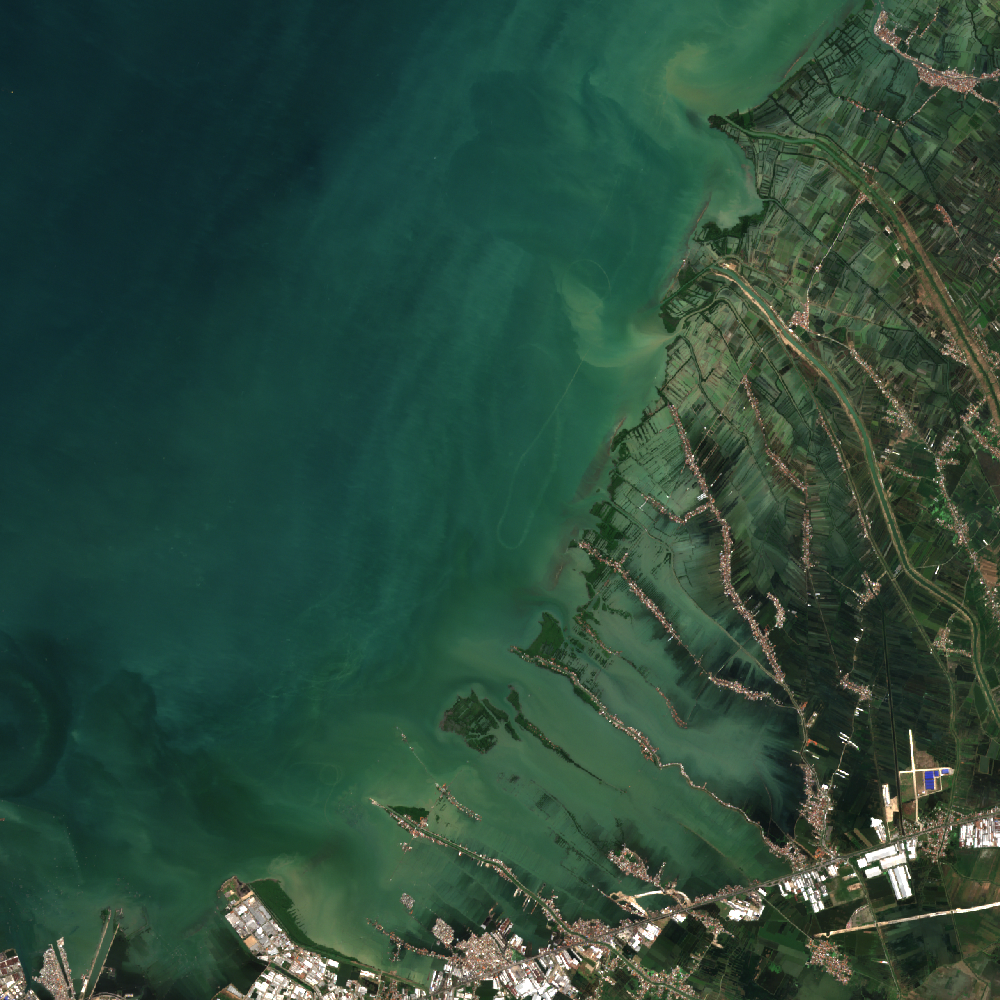

Your living portfolio
You helped
three places heal.
Drag the Earth. Every pulse is a project you funded.
Change verified this month
↔ Drag to rotate · scroll to explore
Follow every contribution from funding to visible, verified change.
Signing in only asks your wallet to prove it belongs to you.
Drag the Earth. Every pulse is a project you funded.
A damaged shoreline is becoming a living coastal barrier.
Fresh imagery shows recovery inside the restored zone.
Indonesia · Coastal recovery
Australia · Coral recovery
Arizona · Community solar

Indonesia
Coastline recovery

Australia
Coral recovery

Arizona
Community solar
Live signals are observations—not proof—until they pass project rules.
A living trail from contribution to proof.
Demak Coastal Recovery · New canopy growth visible
Reef Revival · Restoration team funded
Sunfield Commons · First panels installed
Demak Coastal Recovery · Your journey began
Building with Nature · Demak, Indonesia
The source, dates, cloud metadata, boundary overlap and vegetation-index layers are traceable. The app intentionally withholds a funding-release claim until a calibrated change threshold and human review are completed.